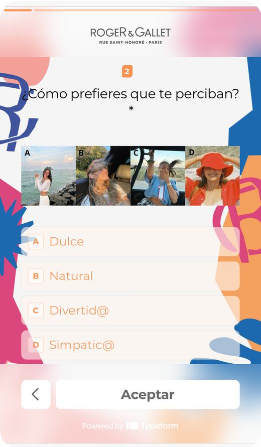
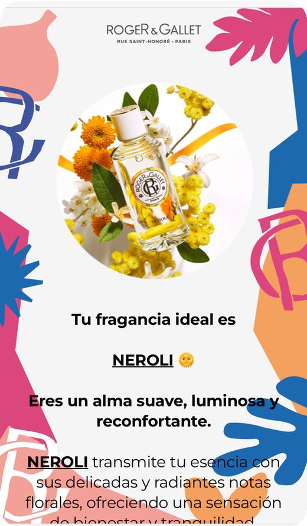
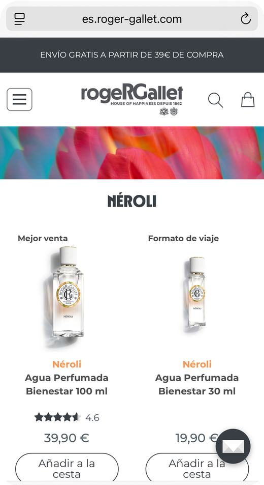
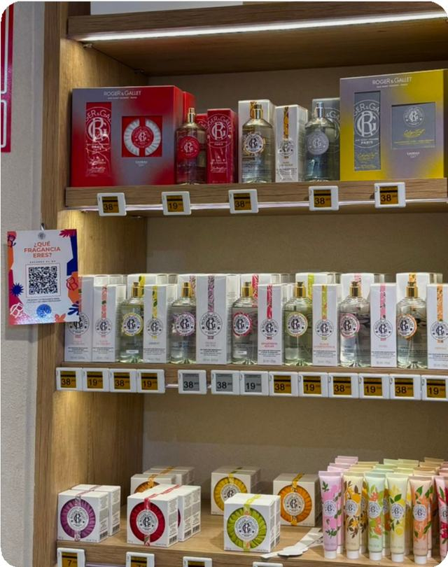

Le quiz « Quel parfum R&G êtes‑vous ? »
- Le défi
- Aider chaque client à trouver, dans toute la gamme, la fragrance qui lui correspond vraiment.
- Mon idée
- Un questionnaire interactif qui détecte automatiquement le parfum idéal selon les réponses, accessible en quelques secondes avec un simple QR code.
- Ce que j’ai réalisé
- La conception du questionnaire de A à Z
- Un parcours fluide, du questionnaire au produit recommandé, pensé pour convertir la découverte en achat
- Le stopper « ¿Qué fragancia eres? » avec QR code et éventail offert, pour l’activation en pharmacie
- Le résultat
- 95 %des clients retrouvent leur coup de cœur olfactif grâce au quizL’outil est toujours utilisé en pharmacie aujourd’hui.



